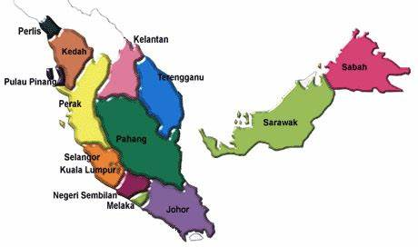

Malaysia ialah sebuah negara yang terletak di Asia Tenggara. Terdapat 13 buah negeri dan tiga wilayah persekutuan. Dua wilayah Persekutuan iaitu Kuala Lumpur dan Putrajaya terletak di Semenanjung Malaysia. Manakala, satu lagi wilayah persekutuan iaitu Labuan terletak di Pulau Borneo (Malaysia Timur). 11 buah negeri terletak di semenanjung Malaysia, manakala dua buah negeri lagi (sekarang bertukar terma panggilan sebagai wilayah) iaitu Wilayah Sabah dan Wilayah Sarawak terletak di Pulau Borneo.
Peta Malaysia
